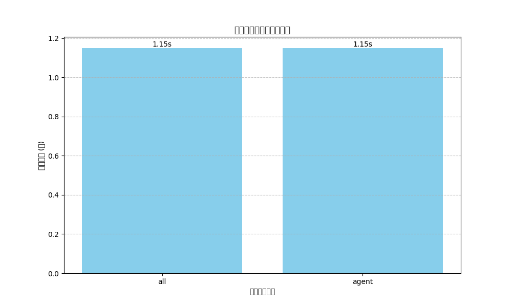

生成日時: 2025-03-19 09:59:40

| テスト名 | ステータス | 実行時間 | 詳細 |
|---|---|---|---|
| test_all_agent_graphs_load | passed | 1.15秒 | tests\integration\test_agent_e2e_workflow.py::test_all_agent_graphs_load PASSED [ 25%] |
| test_agent_collaboration_flow | failed | 1.15秒 | tests\integration\test_agent_e2e_workflow.py::test_agent_collaboration_flow FAILED [ 50%] |
| test_agent_error_handling | failed | 1.15秒 | tests\integration\test_agent_e2e_workflow.py::test_agent_error_handling FAILED [ 75%] |
| test_checkpoint_restoration | failed | 1.15秒 | tests\integration\test_agent_e2e_workflow.py::test_checkpoint_restoration FAILED [100%] |
| 2025-03-19T09:59:34.976169+0900 | error | 1.15秒 | 2025-03-19T09:59:34.976169+0900 | ERROR | src.repositories.base_repository:create_agent_b_graph:504 - エージェントB状態遷移グラフの作成エラー: 'StateGraph' object has no attribute 'set_next' |
| 2025-03-19T09:59:35.459060+0900 | error | 1.15秒 | 2025-03-19T09:59:35.459060+0900 | ERROR | src.repositories.base_repository:create_agent_b_graph:504 - エージェントB状態遷移グラフの作成エラー: 'StateGraph' object has no attribute 'set_next' |
| 2025-03-19T09:59:35.652948+0900 | error | 1.15秒 | 2025-03-19T09:59:35.652948+0900 | ERROR | src.repositories.base_repository:create_agent_b_graph:504 - エージェントB状態遷移グラフの作成エラー: 'StateGraph' object has no attribute 'set_next' |
| FAILED | failed | 1.15秒 | FAILED tests\integration\test_agent_e2e_workflow.py::test_agent_collaboration_flow - AttributeError: 'AgentA' object has no attribute 'process_audit_procedure' |
| FAILED | failed | 1.15秒 | FAILED tests\integration\test_agent_e2e_workflow.py::test_agent_error_handling - AssertionError: エラーハンドリングに失敗しました: 'AgentB' object has no attribute 'execute_tests' |
| FAILED | failed | 1.15秒 | FAILED tests\integration\test_agent_e2e_workflow.py::test_checkpoint_restoration - AttributeError: 'AgentA' object has no attribute 'process_procedure_with_graph' |
実行時間: 1.15秒
ステータス: passed
実行時間: 1.15秒
ステータス: failed